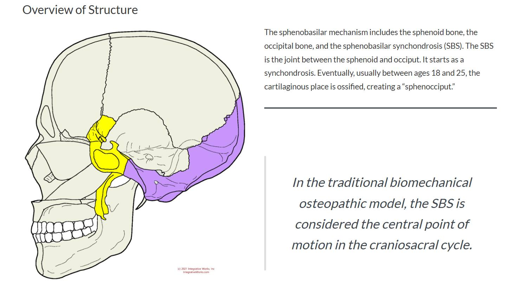

這次進修The Cranial Bowl課程真的是太難太好玩又太有趣，The C…
這次進修The Cranial Bowl課程真的是太難太好玩又太有趣，The Cranial Bowl是所有顱薦治療的最源頭，依蕭老師所看當今所有關於顱薦治療的學門都是衍伸自此，Sutherland醫師臨床鑽研了40年，能在今天從Kenneth老師的課程中學習，真的是何其幸運！
"In the traditional biomechanical osteopathic model, the SBS is considered the central point of motion in the craniosacral cycle."
sphenobasilar synchondrosis (SBS) 蝶骨與枕骨相接的關節聯合處，是許多顱底問題的關鍵點，光是位置角度就有7種：Flexion/Extension/Torsion/Sidebending/Vertical strain/Lateral strain/Compression
能學習掌握這些知識與技術真的是非常開心，頭顱或許是許多無名病痛的關鍵領域，希望未來能運用這門技術幫助更多需要幫助的人!!
圖片來源：https://integrativeworks.com/craniosacral-the-sphenobasilar-sbs-mechanism-axes-quadrants/
